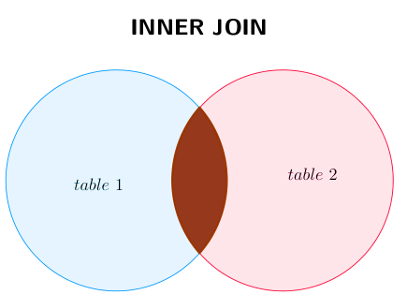

Le langage SQL
Le modèle physique : SGBD relationnel
Présentation
Un Système de Gestion de Bases de Données (SGBD) doit répondre aux objectifs suivants :
Indépendance physique
La façon dont les données sont définies doit être indépendante des structures de stockage utilisées.
Indépendance logique
Un même ensemble de données peut être vu différemment par des utilisateurs différents. Toutes ces visions personnelles des données doivent être intégrées dans une vision logique.
Accès aux données
L'accès aux données se fait par l'intermédiaire d'un Langage de Manipulation de Données (LMD). Il est crucial que ce langage permette d'obtenir des réponses aux requêtes en un temps « raisonnable ». Le LMD doit donc être optimisé afin de minimiser l'accès disques et tout cela de façon totalement transparente pour l'utilisateur.
Administration centrale des données (intégration)
Toutes les données doivent être centralisées dans un résevoir unique commun à toutes les applications. En effet, des visions différentes des données (entre autres) se résolvent plus facilement si les données sont administrées de façon centralisée.
Non-redondance des données
Afin d'éviter les problèmes lors des mises à jour, chaque donnée ne doit être présente qu'une seule fois dans la base.
Cohérence des données
Les données sont soumises à un certain nombre de contraintes d'intégrité qui définissent un état cohérent de la base. Elles doivent pouvoir être exprimées simplement et vérifiées automatiquement à chaque insertion, modification ou suppression de données. Les contraintes d'intégrité sont décrites dans le Langage de Description des Données (LDD).
Partage des données
Il s'agit de permettre à plusieurs utilisateurs d'accéder aux mêmes données au même moment de manière transparente. Si ce problème est simple à résoudre quand il s'agit uniquement d'interrogations, cela ne l'est plus quand il s'agit de modifications dans un contexte multiutilisateurs, car il faut permettre à deux utilisateurs (ou plus) de modifier la même donnée « en même temps » et assurer un résultat d'interrogation cohérent pour un utilisateur consultant une table pendant qu'un autre la modifie.
Sécurité des données
Les données doivent pouvoir être protégées contre les accès non autorisés. Pour cela, il faut pouvoir associer à chaque utilisateur des droits d'accès aux données.
Résistance aux pannes
Que se passe-t-il si une panne survient au milieu d'une modification, si certains fichiers contenant les données deviennent illisibles ? Il faut pouvoir récupérer une base de données dans un état « sain ». Ainsi, après une panne intervenant au milieu d'une modification, deux solutions sont possibles : soit récupérer les données dans l'état dans lequel elles étaient avant la modification, soit terminer l'opération interrompue.
Parmi les SGBD les plus connus, on peut citer : SQLite, MySQL, PostgreSQL, Oracle Database, Microsoft SQL Server, Microsoft Access.
Dans la suite de ce chapitre, on se basera sur l'utilisation du SGBD SQLite (système libre). Ce système, très répandu dans le monde, n'est pas un serveur mais un moteur de base de données embarqué dans du code. On le trouve dans Thunderbird, Firefox, les gestionnaires de bibliothèques de musiques... c'est pourquoi on retrouve certainement ce SGBD dans votre smartphone et PC. Ainsi, il y aurait mille milliards de bases de données SQLite actives dans le monde !!!
SQLite présente aussi l’avantage d’être présent dans la bibliothèque standard de Python. Cela signifie que vous pouvez écrire en Python une application contenant son propre SGBD intégré à l’aide du module sqlite3.
Le langage utilisé dans ce cours est le langage SQL dans sa version SQL2.
On notera qu’il existe quelques différences entre les dialectes SQL utilisés par les différents SGBD. Ces différences seront indiquées le cas échéant.
Conventions d'écriture
On veillera à ne jamais utiliser d'espaces ou d'accents dans les noms de bases de données, de relations et d'attributs. On évitera également d'utiliser des mots réservés. Par « mots réservés », on entend un mot-clé SQL, donc un mot qui sert à définir quelque chose dans le langage SQL. On pourra trouver une liste exhaustive de ces mots réservés dans la documentation officielle du langage SQL.
Une convention largement répandue veut que les commandes et mots-clés SQL soient écrits complétement en majuscules. Nous respecterons cette convention; il est plus facile de relire une commande de 5 lignes lorsque l'on peut différencier au premier coup d'oeil les commandes SQL des noms des relations et des attributs.
Manipulation de données
Généralités
Dans cette partie, nous allons nous intéresser au langage SQL dans sa partie interrogation et manipulation de données (insertion, mise à jour, destruction), donc dans la partie LMD de la plupart des SGBD. Il existe bien évidemment des manipulations bien plus avancées qui dépassent le cadre du programme de NSI.
Pour la suite de ce chapitre, nous prendrons en exemple la petite base de données suivante constituée de 4 relations :
| NomStation | Capacite | Lieu | Region | Tarif |
|---|---|---|---|---|
| Tanger | 350 | Maroc | Afrique | 1200 |
| La Bourboule | 250 | Auvergne | Europe | 700 |
| Victoria | 200 | Seychelles | Océan Indien | 1500 |
| Courchevel | 400 | Alpes | Europe | 2200 |
Relation « Stations »
| NomStation | Libelle | Prix |
|---|---|---|
| La Bourboule | Pêche | 50 |
| La Bourboule | Randonnée | 0 |
| Tanger | Plongée | 120 |
| Tanger | Excursion | 60 |
| Victoria | Plongée | 130 |
| Courchevel | Ski | 120 |
Relation « Activites »
| Id | Nom | Prenom | Ville | Région | Solde |
|---|---|---|---|---|---|
| 1 | Bauer | Elmut | Berlin | Europe | 9825 |
| 2 | Smith | John | Londres | Europe | 12436 |
| 3 | Jonhson | Britney | New York | Amérique | 6721 |
Relation « Clients »
| IdClient | Station | Arrivee | NbPlaces |
|---|---|---|---|
| 1 | Courchevel | 17/02/2021 | 2 |
| 3 | Tanger | 17/11/2020 | 5 |
| 2 | Courchevel | 28/01/2020 | 4 |
| 3 | La Bourboule | 20/07/2018 | 3 |
| 3 | Victoria | 13/09/2017 | 6 |
| 2 | La Bourboule | 13/08/2021 | 3 |
| 3 | Courchevel | 27/02/2019 | 5 |
| 1 | Victoria | 05/09/2020 | 3 |
Relation « Sejours »
On peut télécharger cette base de données ici et l'ouvrir avec le logiciel DB Browser for SQLite (voir la présentation dans le menu à gauche).
Requêtes d'interrogation : SELECT
L'utilisation la plus courante consiste à lire des données issues de la base de données. Cela s'effectue grâce à la commande SELECT, qui retourne des enregistrements dans un tableau de résultats.
Sélections simples
Prenons l'exemple où l'on souhaite extraire de notre base de données le nom et le lieu de toutes les stations se trouvant en Europe. La requête s'effectue de la manière suivante :
SELECT NomStation, Lieu
FROM Stations
WHERE Region = 'Europe'
Cette requète est constituée de 3 clauses :
On trouve ici les attributs (colonnes) que l'on souhaite extraire (afficher).
Dans cette clause, il y a toutes les tables dans lesquelles on trouve les attributs utiles à la requête.
Il s'agit ici d'indiquer les conditions que doivent satisfaire les tuples (les lignes) de la base pour faire partie du résultat.
Le résultat obtenu est le suivant :
| NomStation | Lieu |
|---|---|
| La Bourboule | Auvergne |
| Courchevel | Alpes |
Remarques
- Le résultat d'une requête est une relation (table) dont les attributs sont ceux sélectionnés dans la clause SELECT.
- Pour sélectionner toutes les colonnes, on utilise le caractère « * ». Par exemple :
SQL
SELECT * FROM Stations - Dans la clause WHERE, on spécifie une condition booléenne. On utilise alors les mots clés standards de la logique booléenne, c'est-à-dire AND, OR et NOT. On peut également utiliser les opérateurs de comparaison \(<\) , \(<=\) (pour \(\le\)), \(>\) , \(>=\) (pour \(\ge\)), \(=\) et \(<>\) (pour \(\ne\)).
La recherche « floue »
Il est parfois utile de rechercher les enregistrements dans la base de données dont la valeur d'un attribut commence par telle ou telle lettre. Pour cela, on utilise l'opérateur LIKE dans la clause WHERE. Par exemple, la requête suivante recherchera dans la base de données les clients dont le nom commence par « B » :
SELECT Nom
FROM Clients
WHERE Nom LIKE 'B%'
| Nom |
|---|
| Bauer |
Remarques
- Le caractère « % » peut être remplacé par un nombre incalculable de caractères. Si on souhaite prendre en compte le nombre de caractères dans notre recherche, on utilise le caractère « _ ».
Par exemple,LIKE 'J___'recherche toutes les valeurs de l'attribut qui ont quatre caractères et qui commencent par « J ». - Dans certaines SGBD, le caractère « % » est remplacé par le caractère « * ».
Eviter les doublons
Bien que la spécification des clés permette d'éviter les doublons dans les relations stockées dans la base de données, il peut ne pas en être de même pour le résultat de la requête. Par exemple, la requête suivante donnera autant de lignes dans la relation résultat que de lignes dans la relation « Activites » :
SELECT Libelle
FROM Activites
| Libelle |
|---|
| Pêche |
| Randonnée |
| Plongée |
| Excursion |
| Plongée |
| Ski |
SELECT DISTINCT Libelle
FROM Activites
| Libelle |
|---|
| Pêche |
| Randonnée |
| Plongée |
| Excursion |
| Ski |
Trier le résultat
Il est possible de trier le résultat d'une requête avec la clause ORDER BY suivie de la liste des attributs suivie des mots-clés ASC pour un tri par ordre ascendant ou DESC pour un tri par ordre descendant. Si ces mots-clés ne sont pas présents, par défaut c'est le mot-clé ASC qui est utilisé.
SELECT *
FROM Stations
ORDER BY Region ASC, Lieu DESC
| NomStation | Capacite | Lieu | Region | Tarif |
|---|---|---|---|---|
| Tanger | 350 | Maroc | Afrique | 1200 |
| La Bourboule | 250 | Auvergne | Europe | 700 |
| Courchevel | 400 | Alpes | Europe | 2200 |
| Victoria | 200 | Seychelles | Océan Indien | 1500 |
Remarque
L'ordre ascendant correspond au tri par ordre alphabétique lorsque l'attribut est de type chaîne de caractères.
Il est possible de limiter le nombre de résultats d'une requête grace à la clause LIMIT.
Ainsi, si l'on ne veut que les trois premiers résultats de la précédente requête, on interroge la base de la manière suivante :
SELECT *
FROM Stations
ORDER BY Region ASC, Lieu DESC
LIMIT 3
| NomStation | Capacite | Lieu | Region | Tarif |
|---|---|---|---|---|
| Tanger | 350 | Maroc | Afrique | 1200 |
| La Bourboule | 250 | Auvergne | Europe | 700 |
| Courchevel | 400 | Alpes | Europe | 2200 |
Usages avancés
Dans le langage SQL, on peut interagir de manière dynamique avec la base de données comme par exemple :
Par exemple, la requête suivante donnera une relation plus « lisible » :
SELECT CONCAT(Prenom,'',UPPER(Nom)) AS Individu, Ville
FROM Clients
| Individu | Ville |
|---|---|
| Elmut BAUER | Berlin |
| John SMITH | Londres |
| Britney JONHSON | New York |
Remarques
- La fonction CONCAT permet de concaténer plusieurs attributs. Cette fonction, standardisée dans le langage SQL n'est pas supportée par le moteur SQLite. Au lieu de celà, il utilise l'opérateur de concaténation
||pour fusionner deux chaînes de caractères en une seule. Ce qui donne dans notre exemple :SQLSELECT Prenom || ' ' || UPPER(Nom) AS Individu, Ville FROM Clients - La fonction UPPER, quant à elle, permet de transformer l'attribut, initialement en minuscules, en majuscules.
- Le mot-clé AS permet de renommer l'attribut. On utilise un alias permettant de faciliter la lecture du résultat.
Requêtes sur plusieurs tables (jointures)
Définition
On appelle jointure l'opération consistant à rapprocher selon une condition les tuples de deux relations d'une base de données afin de former une troisième relation qui contient l'ensemble de tous les tuples obtenus en concaténant un tuple de la première relation et un tuple de la seconde vérifiant la condition de rapprochement.
Essayons par exemple d'interroger la base de données pour donner le nom des clients avec le nom des stations où ils ont séjourné. L'information concernant le nom du client est dans la relation « Clients » tandis que le lien client/séjour se trouve dans la relation « Sejours ». On joint ainsi les lignes de nos 2 relations.
SELECT Nom, Station
FROM Clients
INNER JOIN Sejours ON id = idClient
| Nom | Station |
|---|---|
| Bauer | Courchevel |
| Jonhson | Tanger |
| Smith | Courchevel |
| Jonhson | La Bourboule |
| Jonhson | Victoria |
| Smith | La Bourboule |
| Jonhson | Courchevel |
| Bauer | Victoria |
SELECT Stations.NomStation, Lieu, Region, Libelle, Prix
FROM Stations
INNER JOIN Activites ON Stations.NomStation = Activites.NomStation
| NomStation | Lieu | Region | Libelle | Prix |
|---|---|---|---|---|
| Tanger | Maroc | Afrique | Excursion | 60 |
| Tanger | Maroc | Afrique | Plongée | 120 |
| La Bourboule | Auvergne | Europe | Pêche | 50 |
| La Bourboule | Auvergne | Europe | Randonnée | 0 |
| Victoria | Seychelles | Océan Indien | Plongée | 130 |
| Courchevel | Alpes | Europe | Ski | 120 |
SELECT s.NomStation, Lieu, Region, Libelle, Prix
FROM Stations AS s
INNER JOIN Activites AS a ON s.NomStation = a.NomStation
Remarque
Le mot-clé INNER est facultatif.
On peut également faire une jointure avec plus de 2 relations. Essayons d'interroger la base de données pour donner le nom des clients avec les noms des stations ainsi que les régions où ils ont séjourné :
SELECT c.Nom, se.Station, s.Region
FROM ((Clients AS c
INNER JOIN Sejours AS se ON c.Id = se.Idclient)
INNER JOIN Stations AS s ON se.Station = s.NomStation)
| Nom | Station | Region |
|---|---|---|
| Bauer | Courchevel | Europe |
| Jonhson | Tanger | Afrique |
| Smith | Courchevel | Europe |
| Jonhson | La Bourboule | Europe |
| Jonhson | Victoria | Océan Indien |
| Smith | La Bourboule | Europe |
| Jonhson | Courchevel | Europe |
| Bauer | Victoria | Océan Indien |

Les fonctions d'agrégation
Les fonctions d'agrégation dans le langage SQL permettent d'effectuer des opérations statistiques sur une colonne (en général de type numérique).
Les principales fonctions sont les suivantes :
Essayons de savoir combien il y a de stations en Europe dans la relation « Stations » :
SELECT COUNT(NomStation) AS Nombre
FROM Stations
WHERE Region = 'Europe'
| Nombre |
|---|
| 2 |
SELECT MIN(Tarif) AS Mini, MAX(Tarif) AS Maxi, AVG(Tarif) AS Moy
FROM Stations
| Mini | Maxi | Moy |
|---|---|---|
| 700 | 2200 | 1400 |
SELECT SUM(NbPlaces) AS Total
FROM Sejours
INNER JOIN Clients ON id = IdClient AND Nom = 'Smith'
| Total |
|---|
| 7 |
Requêtes de mises à jour
Insertion de données : INSERT INTO
L'insertion des données s'effectue à l'aide de la commande INSERT INTO. Cela permet d'ajouter une ou plusieurs lignes dans la relation voulue de notre base de données.
Par exemple, nous souhaitons ajouter un client dans la relation « Clients » :
INSERT INTO clients VALUES (4, 'Yuan', 'Tchang', 'Pékin', 'Chine', 8256)
Si nous souhaitons ajouter plusieurs clients à la fois, on sépare les valeurs par une virgule. On peut également pour plus de clarté aller à la ligne après le mot-clé VALUES :
INSERT INTO clients
VALUES
(5, 'De Oliveira', 'Manuel', 'Porto', 'Europe', 7253),
(6, 'Sako', 'Mamadou', 'Abidjan', 'Afrique', 2561)
Remarques
Il faut bien faire attention lors de cette manipulation car il n'est pas possible d'ajouter des doublons de lignes notamment à cause de la clé primaire de la relation qui est unique.
Suppression de données : DELETE FROM
La commande DELETE permet de supprimer des lignes dans une relation. En utilisant cette commande associée à la clause WHERE, il est possible de sélectionner les lignes qui seront supprimées.
Conseils
Avant d'essayer de supprimer des lignes, il est recommandé d'effectuer une sauvegarde de la base de données, ou tout du moins de la table concernée par la suppression. Ainsi, s'il y a une mauvaise manipulation, il est toujours possible de restaurer les données.
Essayons de supprimer dans notre relation « Clients » les trois individus que l'on a ajouté dans le paragraphe précédent :
DELETE FROM Clients
WHERE Id >= 4
Remarques
Si la clause WHERE n'est pas présente, cela supprimera toutes les lignes et la relation serait alors vide !
Modification de données : UPDATE
La commande UPDATE permet d'effectuer des modifications sur des lignes existantes. Très souvent, cette commande est utilisée avec la clause WHERE pour spécifier sur quelles lignes doivent porter la ou les modifications. Essayons de modifier la valeur de l'attribut Solde de l'individu prénommé John dans la relation « Clients » :
UPDATE Clients SET Solde = 11728
WHERE Prenom = 'John'
Nous pouvons aussi mettre à jour plusieurs attributs et appliquer des formules dans la même requête. Par exemple, essayons de modifier en majuscule les libellés et tous les prix des activités ayant subi une augmentation de 10 %.
UPDATE Activites SET Libelle = UPPER(Libelle), Prix = Prix * 1.1